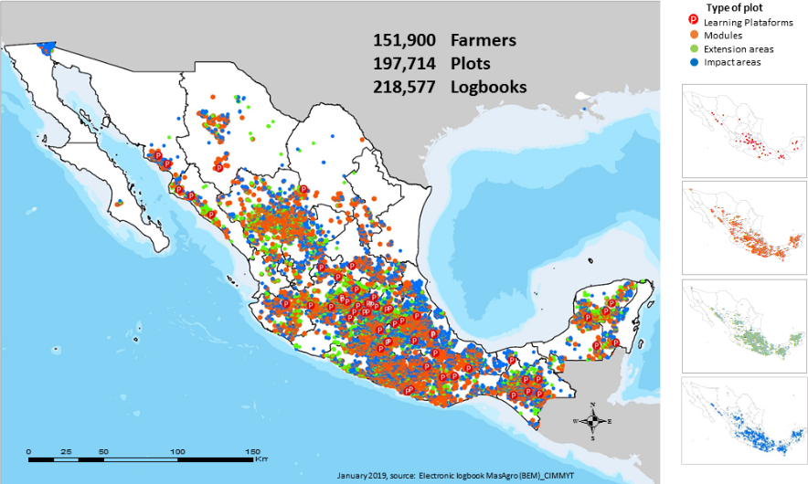
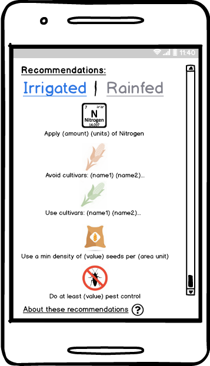
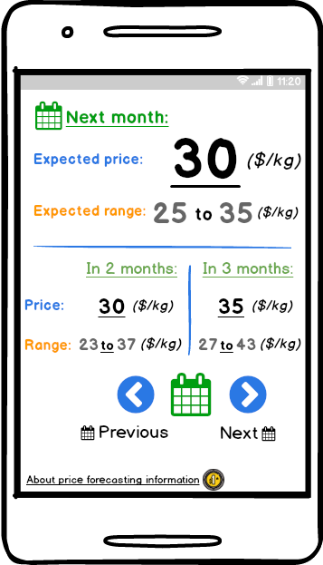

About cultivar characteristics
Maize plants have critical growing stages, where nutrients provided (e.g. by fertilizers) are best utilized. When you select a cultivar maturity class and an ideal climate you are entering a combination of characteristics that have been well studied as key indicators used for predicting when these critical growing phases will occur. AgroTutor uses these characteristics, combined with planting date and weather information to recommend fertilization times that appear on the cropping calendar as windows of opportunity, or periods where is best to apply fertilizer.
These recommendations are based on a split fertilization strategy, where a smaller amount of fertilization is placed at sowing and a second, larger amount at the V5-V6 stage, or when the plant has accumulated between 18 and 25% of the temperature requirement for maturing or growing degree days (GDD). This approach minimizes loses and maximizes nutrient uptake. Maturity classes translate into specific pre-set Potential Heat Units (PHU) or GDD, with “early” maturity class requiring the lowest PHU/GDD and “late” maturity the highest. Ideal climate is used to determine base temperature (Tbase), or the minimum temperature plants need to make best use of heat/radiation.
A little bit before these critical thresholds are reached then the app will show a window of opportunity on the calendar when it would be optimal to adequately fertilize your crop.
Below the corresponding GDD and Tbase for the maturity classes and climate selected.
|
Maturity class |
PHU/GDD [°C] |
|
early |
1680 |
|
mid-early |
1890 |
|
intermediate |
2100 |
|
mid-late |
2310 |
|
late |
2520 |
|
Climate suitability |
Tbase [°C] |
|
cold |
4 |
|
temperate/subtropical |
7 |
|
tropical |
9 |
|
hybrid |
10 |
About potential yield data
 Using
the location of the registered plot, its associated data (e.g. soil maps and weather),
selected cultivar characteristics, and water management (rain-fed or fully
irrigated), AgroTutor displays historic potential yield estimates that are not
limited by nutrients nor pests. These estimates are the outputs of the Environmental
Policy Integrated Climate (EPIC) crop model, ran for the time period 1980-2010.
The results show information about the maximum yield potentially attained, but
also the variability of these results for the selected location. The conditions
used to calculate potential performance using the EPIC crop model are shown
below:
Using
the location of the registered plot, its associated data (e.g. soil maps and weather),
selected cultivar characteristics, and water management (rain-fed or fully
irrigated), AgroTutor displays historic potential yield estimates that are not
limited by nutrients nor pests. These estimates are the outputs of the Environmental
Policy Integrated Climate (EPIC) crop model, ran for the time period 1980-2010.
The results show information about the maximum yield potentially attained, but
also the variability of these results for the selected location. The conditions
used to calculate potential performance using the EPIC crop model are shown
below:
|
Agronomic characteristic |
Conditions |
|
Nutrient management / fertilizer |
Application in optimal time and quantity. Elimination of nutrient deficit. |
|
Irrigation |
Application in optimal quantity and time. Elimination of water deficits. |
|
Climate |
The climate variables considered are solar radiation, temperature and precipitation. If irrigation is used, precipitation is not considered. The climate data have a resolution of 25 km x 25 km. |
|
Soil |
The soil characteristics taken into consideration are depth, texture, pH and organic matter content. Since the required nutrients are applied, the soil is considered as storage and water supply. Only the predominant soil(s) in the region are considered. |
|
Slope |
Slope affects surface water runoff. The regional average is used. |
|
Planting dates |
The planting dates used were estimated according to weather and reported planting dates. The sowing date is the same in each year and geographical location, except when the temperature is below the minimum which delays crop sowing. |
About local benchmarking information
Benchmarking costs, income, yields and profit information are based on local historical data coming from almost 200.000 experimental, demonstrative and pioneer farmers’ plots across Mexico.
These data are collected through sustainable intensification projects run by CIMMYT using an electronic logbook system (BEM). Since the historical data are geo-tagged, the information displayed is targeted to registered plots, crops and products, allowing the farmer to compare their own production costs, yields and profit against those from nearby fields. The information provided is anonymized and is meant to showcase the possibilities of improvement using real cases. Information on historical costs, income, profit and yield are available.
About data driven recommended practices
The planner module details farming practices derived from analyses done on field data collected by CIMMYT. The results consist in a ranking of variables according to their importance with the top five corresponding to the most yield limiting factors. The model outputs are converted into a set of recommendations shown in AgroTutor to help optimize their agronomical practices. The most frequent parameters highlighted for optimization are, e.g. cultivar sown, levels of fertilization, sowing density and some weather parameters, but results are site-specific. This approach has already been successfully tested in Chiapas, Guanajuato, Sonora and Sinaloa in 2017. In AgroTutor, the recommendations shown target plots, crops and cropping systems registered in the app, but farmers can also check recommendations for other locations and crops using the planner option.
About price forecasting
This module provides direct information regarding projected prices at trading hubs for commodities such as wheat and maize, with predictions from 1 month to 12 months in advance. The method used to obtain forecasts of agricultural commodities is based on the estimation of a series of statistical models that include factors such as the climate, but also financial and macroeconomic behaviors, as well as market fundamentals corresponding to the particular commodity whose price is predicted. Predicted prices are shown with confidence intervals to give an idea of how reliable these estimates might be. The price forecasting module can be used to have a better evaluation of the value of a harvested or soon to be harvested crop and decide what actions need to be taken.